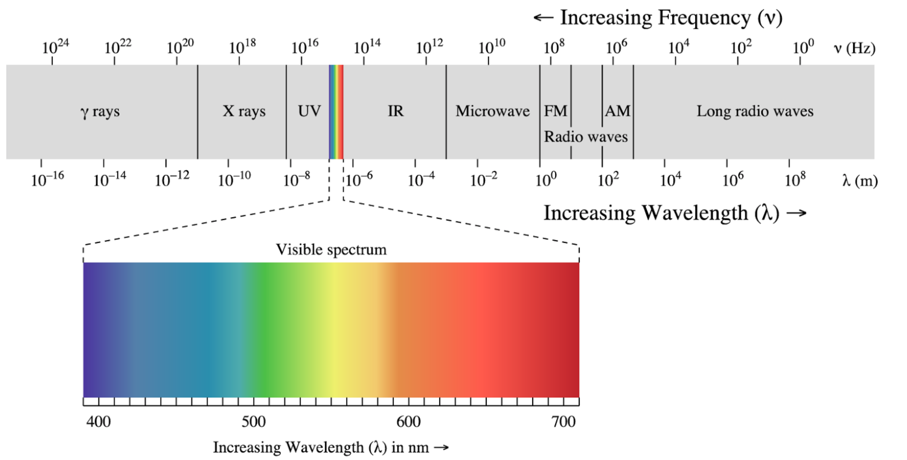
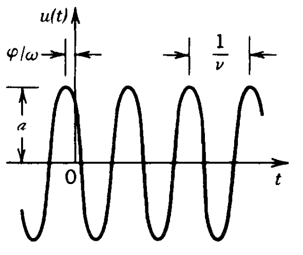
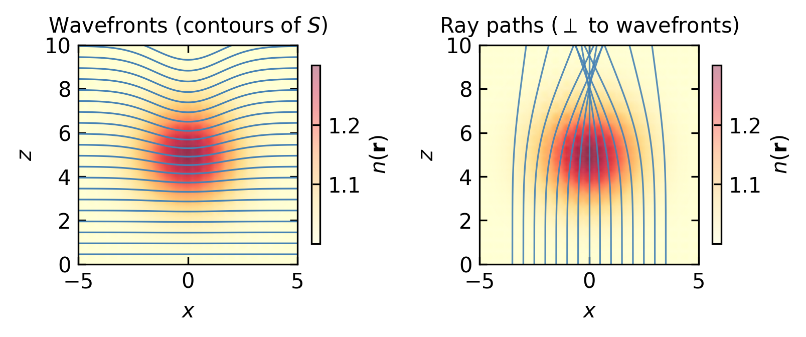
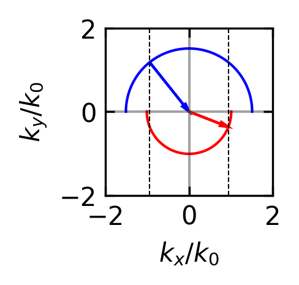
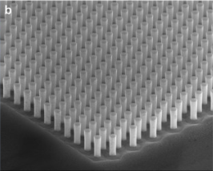
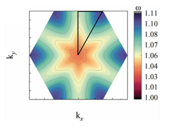

Wave optics extends our understanding beyond the limitations of geometric optics by treating light as a wave phenomenon. This approach explains effects that cannot be accounted for by ray tracing alone, such as:
Interference (the combination of waves)
Diffraction (the bending of waves around obstacles or through apertures)
Color (the wavelength-dependent nature of light)
Light is part of the electromagnetic spectrum, which spans an enormous range of frequencies. The visible region, extending approximately from 400 nm (violet) to 700 nm (red), represents only a small fraction of this spectrum. This wave description is essential for understanding many optical phenomena that geometric optics cannot explain, particularly when dealing with structures comparable in size to the wavelength of light.

Figure 1— Electromagnetic Spectrum with its different regions
In the following, we would like to introduce wave by discarding the fact, that light is related to electric and magnetic fields. This is useful as the vectorial nature of the electric and magnetic field further complicates the calculations, but we do not need those yet. Accordingly we also do not understand how light really interacts with matter and we therefore have to introduce some postulates as well.
Postulates of Wave Optics
Wave
A wave corresponds to a physical quantity which oscillates in space and time. Its energy current density is related to the square magnitude of the amplitude. A wave satisfies the wave equation.
Wave equation
\[
\nabla^2 u - \frac{1}{c^2}\frac{\partial^2 u}{\partial t^2}=0
\]
where the Laplace operator \(\nabla^2\) is defined as:
The wave equation is a linear differential equation, which implies that the superposition principle holds. Specifically, if \(u_1(\mathbf{r},t)\) and \(u_2(\mathbf{r},t)\) are solutions of the wave equation, then any linear combination:
is also a solution, where \(a_1\) and \(a_2\) are arbitrary constants.
Monochromatic Waves
A monochromatic wave consists of a single frequency \(\omega\). By definition, such a wave must be infinite in time and free from phase disturbances (such as sudden jumps). The mathematical expression for a monochromatic wave is:
\[u(\mathbf{r},t)=a(\mathbf{r})\cos(\omega t + \phi(\mathbf{r}))\]
where:
\(a(\mathbf{r})\) represents the amplitude
\(\phi(\mathbf{r})\) represents the spatial phase
\(\omega\) represents the angular frequency

Figure 2— Representation of a wavefunction over time (constant position) denoting the phase \(\phi\) and the period \(T=1/\nu\)
Here, \(\phi\) represents the spatial phase of the wavefunction. Substituting this into the wave equation and noting that the time derivatives bring down factors of \(i\omega\):
where \(I\) is measured in units of \(\left[\frac{W}{m^2}\right]\). The angle brackets \(\langle \ldots \rangle\) represent a time average over one oscillation cycle of \(u\). For visible light, this averaging occurs over an extremely brief period - for example, light with a wavelength of 600 nm has a cycle duration of just 2 femtoseconds.
The optical power \(P\) of a wave can be calculated by integrating the intensity over a surface area \(A\):
\[
P=\int_A I(\mathbf{r},t) \, dA
\]
Inserting the seperation of the complex wavefunction into spatial and temporal components leads to the following expression for the intensity:
\[
I(\mathbf{r})=|U(\mathbf{r})|^2
\]
Thus the physical quantity forming the spatial and temporal oscillation of the wavefunction is also providing the intensity of the wave when its magnitude is squared. This is a fundamental property of wavefunctions and for example not the case when temperature oscillates in space and time in a medium.
Wavefronts
Wavefronts are surfaces in space where the phase is constant:
\[
\phi(\mathbf{r})=\text{const}
\]
Typically, this constant is chosen to represent points of maximum spatial amplitude, such that:
\[
\phi(\mathbf{r})=2\pi q
\]
where \(q\) is an integer.
The direction normal to these wavefronts can be described by the gradient vector:
This vector \(\mathbf{n}\) is always perpendicular to the wavefront surface and points in the direction of wave propagation. The evolution of these wavefronts in time provides important information about the wave’s propagation characteristics.
The Eikonal Equation — Connecting Wave Optics to Ray Optics
The concept of wavefronts provides a natural bridge between wave optics and ray optics through the Eikonal approximation. Consider a monochromatic wave in an inhomogeneous medium with spatially varying refractive index \(n(\mathbf{r})\). We write the complex amplitude as:
where \(A(\mathbf{r})\) is a slowly varying amplitude envelope and \(S(\mathbf{r})\) is the Eikonal — a real-valued function whose surfaces of constant value are the wavefronts. The factor \(k_0 = 2\pi/\lambda_0\) is the free-space wavenumber, so \(S\) has units of optical path length.
Substituting this ansatz into the Helmholtz equation \(\nabla^2 U + k_0^2 n^2 U = 0\) and collecting terms by powers of \(k_0\), the leading-order term (proportional to \(k_0^2\)) gives the Eikonal equation:
\[
|\nabla S|^2 = n^2(\mathbf{r})
\tag{1}\]
Detailed derivation of the Eikonal equation
Starting point: the Helmholtz equation
For a monochromatic wave in an inhomogeneous medium the complex amplitude \(U(\mathbf{r})\) satisfies
\[
\nabla^2 U + k_0^2\, n^2(\mathbf{r})\, U = 0, \qquad k_0 = \frac{2\pi}{\lambda_0}.
\]
where \(A(\mathbf{r})\) is a real, slowly varying amplitude and \(S(\mathbf{r})\) is the real-valued eikonal.
Computing the Laplacian
Using the product rule twice, with \(\psi \equiv e^{i k_0 S}\):
\[
\nabla U = \bigl(\nabla A + i k_0 A\,\nabla S\bigr)\,e^{i k_0 S}.
\]
Differentiating once more:
\[
\nabla^2 U = \Bigl[\nabla^2 A + 2i k_0 \,\nabla A \cdot \nabla S + i k_0 A\,\nabla^2 S - k_0^2 A\,|\nabla S|^2\Bigr]\,e^{i k_0 S}.
\]
Substituting into the Helmholtz equation
Dividing through by \(e^{i k_0 S}\) gives
\[
\nabla^2 A + 2i k_0 \,\nabla A \cdot \nabla S + i k_0 A\,\nabla^2 S - k_0^2 A\,|\nabla S|^2 + k_0^2 n^2 A = 0.
\]
Sorting by powers of \(k_0\)
Order
Real part
Imaginary part
\(k_0^2\)
\(A\bigl(n^2 - |\nabla S|^2\bigr) = 0\)
—
\(k_0^1\)
—
\(2\,\nabla A \cdot \nabla S + A\,\nabla^2 S = 0\)
\(k_0^0\)
\(\nabla^2 A = 0\)
(negligible for \(k_0\to\infty\))
Leading order — the Eikonal equation
The \(k_0^2\) term (dominant for \(k_0 \gg 1\), i.e. short wavelengths) requires
\[
\boxed{|\nabla S|^2 = n^2(\mathbf{r}).}
\]
This is valid whenever \(A\) varies on length scales much larger than \(\lambda_0\), so that \(\nabla^2 A / k_0^2 \ll n^2 A\).
Next order — the transport equation
The \(k_0^1\) imaginary terms give
\[
2\,\nabla A \cdot \nabla S + A\,\nabla^2 S = 0,
\]
which can be rewritten as \(\nabla \cdot (A^2\,\nabla S) = 0\). This is a continuity equation: \(A^2\,\nabla S\) is the ray-optical intensity flux, so energy is conserved along ray tubes.
Why the Eikonal equation matters
The Eikonal equation is important for several reasons:
Foundation of geometrical optics. All ray-tracing rules – straight rays in homogeneous media, Snell’s law at interfaces, focusing by lenses – follow from \(|\nabla S|^2 = n^2\) without any additional assumptions.
Short-wavelength limit of wave optics. The derivation shows explicitly that ray optics is valid when \(\lambda_0 \to 0\), in exact analogy with how classical mechanics emerges from quantum mechanics when \(\hbar \to 0\).
Formal identity with Hamilton-Jacobi mechanics. With the substitution \(n \leftrightarrow \sqrt{2m(E-V)}/\hbar\), the Eikonal equation becomes Hamilton’s principal equation. This deep structural link underlies the wave-particle duality in both optics and quantum theory.
Ray direction from the phase. Because \(\nabla S\) is perpendicular to the wavefronts and points along the rays, the eikonal \(S\) encodes the full ray geometry of the field. Every specific wave solution (plane wave, spherical wave, Gaussian beam) can be classified and understood by computing its eikonal.
Design of optical instruments. Aberration theory, anti-reflection coatings, and gradient-index (GRIN) lens design are all formulated in terms of the eikonal and its deviations from an ideal reference surface.
This is the fundamental equation of geometrical optics, written in the language of wave optics. It tells us that the gradient of the Eikonal (i.e., the local direction and “speed” of wavefront propagation) is determined by the refractive index.
From Wavefronts to Rays
The Eikonal equation connects wave optics to ray optics in a precise way:
Rays are the curves perpendicular to the wavefronts, i.e., along \(\nabla S\).
The ray equation\(\frac{d}{ds}\left(n\frac{d\mathbf{r}}{ds}\right) = \nabla n\) from Fermat’s principle is a direct consequence of the Eikonal equation.
The approximation is valid when \(\lambda \ll\) the length scale over which \(n(\mathbf{r})\) varies — exactly the regime of geometrical optics.
The next-order term (proportional to \(k_0\)) yields the transport equation:
\[
2\,\nabla A \cdot \nabla S + A\,\nabla^2 S = 0
\]
which governs how the amplitude \(A(\mathbf{r})\) evolves along rays — it encodes energy conservation in the ray picture.
Code
import numpy as npimport matplotlib.pyplot as pltfig, axes = plt.subplots(1, 2, figsize=get_size(14, 6))# --- Parameters ---N =200x = np.linspace(-5, 5, N)z = np.linspace(0, 10, N)X, Z = np.meshgrid(x, z)# Gaussian refractive index bumpn0 =1.0dn =0.3x_center, z_center =0.0, 5.0sigma =1.5n_field = n0 + dn * np.exp(-((X - x_center)**2+ (Z - z_center)**2) / (2* sigma**2))# --- Left panel: wavefronts via accumulated optical path ---# For a plane wave entering from z=0, the Eikonal S(x,z) ≈ ∫ n dzdz = z[1] - z[0]S = np.cumsum(n_field, axis=0) * dzax = axes[0]im = ax.pcolormesh(X, Z, n_field, cmap='YlOrRd', shading='gouraud', alpha=0.4)# Wavefront contours (surfaces of constant S)levels = np.arange(0.5, 11, 0.5)ax.contour(X, Z, S, levels=levels, colors='steelblue', linewidths=0.8)ax.set_xlabel(r'$x$')ax.set_ylabel(r'$z$')ax.set_title('Wavefronts (contours of $S$)', fontsize=10)ax.set_aspect('equal')cb = fig.colorbar(im, ax=ax, shrink=0.7, label=r'$n(\mathbf{r})$')# --- Right panel: ray paths ---# Trace rays by integrating dr/ds = ∇S / |∇S|# Using simple Euler integration of the ray equationfrom scipy.interpolate import RegularGridInterpolator# Compute ∇n for the ray equationgrad_n_x = np.gradient(n_field, x, axis=1)grad_n_z = np.gradient(n_field, z, axis=0)interp_n = RegularGridInterpolator((z, x), n_field, bounds_error=False, fill_value=n0)interp_dnx = RegularGridInterpolator((z, x), grad_n_x, bounds_error=False, fill_value=0.0)interp_dnz = RegularGridInterpolator((z, x), grad_n_z, bounds_error=False, fill_value=0.0)ax2 = axes[1]ax2.pcolormesh(X, Z, n_field, cmap='YlOrRd', shading='gouraud', alpha=0.4)# Launch rays from z=0 at different x positionsx_starts = np.linspace(-3.5, 3.5, 15)ds_step =0.02n_steps =int(10.0/ ds_step) +100for x0 in x_starts:# Ray state: position (x, z) and direction (dx/ds, dz/ds) rx, rz = x0, 0.01# Initial direction: straight along z n_local = interp_n(np.array([[rz, rx]]))[0] dx_ds =0.0 dz_ds =1.0 ray_x = [rx] ray_z = [rz]for _ inrange(n_steps):# Get local n and gradients pt = np.array([[rz, rx]]) n_local = interp_n(pt)[0] dn_x = interp_dnx(pt)[0] dn_z = interp_dnz(pt)[0]# Ray equation: d/ds(n * dr/ds) = ∇n# → n * d²r/ds² + dn/ds * dr/ds = ∇n# Simplified Euler: update direction dx_ds += (dn_x / n_local) * ds_step dz_ds += (dn_z / n_local) * ds_step# Renormalize direction (rays parametrized by arc length) norm = np.sqrt(dx_ds**2+ dz_ds**2) dx_ds /= norm dz_ds /= norm# Step rx += dx_ds * ds_step rz += dz_ds * ds_stepif rz >10or rz <0orabs(rx) >5:break ray_x.append(rx) ray_z.append(rz) ax2.plot(ray_x, ray_z, color='steelblue', linewidth=0.8, alpha=0.9)ax2.set_xlabel(r'$x$')ax2.set_ylabel(r'$z$')ax2.set_title('Ray paths ($\\perp$ to wavefronts)', fontsize=10)ax2.set_aspect('equal')fig.colorbar(im, ax=ax2, shrink=0.7, label=r'$n(\mathbf{r})$')plt.tight_layout()plt.show()

Figure 4— Eikonal approximation: a Gaussian refractive index profile \(n(\mathbf{r})\) bends wavefronts and rays. Left: wavefronts (contours of constant \(S\)) distorted by the index variation. Right: ray paths computed from \(\nabla S\), curving toward higher \(n\) — exactly as predicted by Fermat’s principle.
The Eikonal equation reveals that ray optics is the short-wavelength limit of wave optics — analogous to how classical mechanics emerges from quantum mechanics when \(\hbar \to 0\). In both cases, the phase of the wavefunction determines the classical trajectory. This analogy runs deep: the Eikonal equation \(|\nabla S|^2 = n^2\) is formally identical to the Hamilton–Jacobi equation of classical mechanics, with \(S\) playing the role of Hamilton’s characteristic function and \(n(\mathbf{r})\) acting as a potential.
Plane Waves
A plane wave represents a fundamental solution of the homogeneous wave equation. In its complex form, it is expressed as:
where \(\hat{\mathbf{k}} = \mathbf{k}/k = \mathbf{k}/(nk_0)\) is the unit propagation direction. Then \(\nabla S = -\hat{\mathbf{k}}\), which is a constant vector, so \(|\nabla S|^2 = 1 = n^2/n^2\). In a homogeneous medium of index \(n\) we have \(k = nk_0\) and the Eikonal equation (Equation 1) is satisfied identically. The rays, defined as curves along \(\nabla S\), are the straight lines parallel to \(\mathbf{k}\) – exactly what geometrical optics demands for a uniform medium.
where \(q\) is an integer. It just means that the projection of the position vector \(\mathbf{r}\) onto the wavevector \(\mathbf{k}\) is a multiple of \(2\pi\). This equation describes a plane perpendicular to the wavevector \(\mathbf{k}\). Adjacent wavefronts are separated by the wavelength \(\lambda=2\pi/k\), where \(k\) represents the spatial frequency of the wave oscillation.
The spatial component of the plane wave is given by:
If we select a point on the wavefront \(\mathbf{r}_{m}\), and follow that over time, the phase \(\phi(t)=\text{const}\). Taking the time derivative results in
If we choose the direction of the wavevector for measuring the propagation speed, i.e. \(\mathbf{r}_{m}=r_{m}\mathbf{e}_k\) then we find for the propagation speed
and is called a dispersion relation despite the fact, that we do not really understand why those quantities are related to energy and momentum.
Note
Light in free space exhibits a linear dispersion relation, i.e. the frequency of light changes linearly with the wavevector magnitude.
Note that if we choose a different propagation direction \(\mathbf{e}\) than the one along the wavevector \(\mathbf{e}_k\), we can write the phase velocity as
which means that if you observe the wavepropagation not in the direction of the wavevector, the phase velocity is actually bigger than the speed of light and even tends to infinity if the angle between the wavevector and the observation direction tends to 90°.
Propagation in a Medium
When a wave propagates through a medium:
The frequency \(\omega\) remains constant (determined by the source)
The wave speed changes according to: \[
c=\frac{c_0}{n}
\] where \(n\) is the refractive index of the medium
This leads to changes in:
the wavelength, which becomes shorter in the medium \[
\lambda=\frac{\lambda_0}{n}
\]
the length of the wavevector, which increases in the medium \[
k=nk_0
\]
Snells Law
The change in the length of the wavevector has some simple consequence for Snells law. We can write Snells law as
\[
n_1k_0\sin(\theta_1)=n_2k_0\sin(\theta_2)
\]
where \(k_0\) is the wavevector length in vacuum. As the \(n_1k_0\) is the magnitude of the wavevector in medium 1, and \(n_2k_0\) is the magnitude of the wavevector in medium 2, we can rewrite Snells law as
\[
k_1\sin(\theta_1)=k_2\sin(\theta_2)
\]
which means that the component of the wavevector parallel to the interface is conserved. If the wavevector has constant length then the wavevector incident at different angles is between a point on a circle and the origin in the diagram below. The circle corresponds to an isofrequency surface.
Code
theta_upper = np.linspace(0, np.pi, 100) # Upper half circletheta_lower = np.linspace(np.pi, 2*np.pi, 100) # Lower half circle# Radii for the circlesr1 =1.51# Radius for upper half circler2 =1.01# Radius for lower half circlex_upper = r1 * np.cos(theta_upper)y_upper = r1 * np.sin(theta_upper)x_lower = r2 * np.cos(theta_lower)y_lower = r2 * np.sin(theta_lower)# Create the plotplt.figure(figsize=get_size(4, 3),dpi=150)plt.plot(x_upper, y_upper, 'b-', label=f'Upper radius = {r1}')plt.plot(x_lower, y_lower, 'r-', label=f'Lower radius = {r2}')# Add arrow# Calculate arrow start point (on the upper circle at 135 degrees)arrow_start_x = r1 * np.cos(3*np.pi/4.2) # 135 degrees in radiansarrow_start_y = r1 * np.sin(3*np.pi/4.2)# Add arrow to origin (0,0)plt.arrow(arrow_start_x, arrow_start_y, -arrow_start_x, -arrow_start_y, head_width=0.1, head_length=0.2, fc='b', ec='b', length_includes_head=True, label='45° arrow')dy=np.sqrt(r2**2-arrow_start_x**2)plt.arrow(0, 0, -arrow_start_x, -dy, head_width=0.1, head_length=0.2, fc='r', ec='r', length_includes_head=True, label='45° arrow')plt.axhline(y=0, color='k', linestyle='-', alpha=0.3)plt.axvline(x=0, color='k', linestyle='-', alpha=0.3)plt.axvline(x=-arrow_start_x, color='k', linestyle='--',lw=0.5)plt.axvline(x=arrow_start_x, color='k', linestyle='--', lw=0.5)plt.axis('square')plt.grid(True, alpha=0.3)plt.xlabel(r'$k_x/k_0$')plt.ylabel(r'$k_y/k_0$')plt.xlim(-2,2 )plt.ylim(-2,2 )# Show the plotplt.show()

Snells law construction using the conservation of the wavevector component parallel to the interface. The vertical dashed lines indicate the parallal component of the wavevector in the two media.

Electron microscopy image of a 2D photonic crystal

Isofrequency surfaces of a photonic crystal
Evanescent Waves
Snell’s law in the form \(k_{1,\parallel}=k_{2,\parallel}\) conserves the parallel component of the wavevector across an interface. But the magnitude of the wavevector is fixed by the dispersion relation in each medium: \(|\mathbf{k}_1|=n_1 k_0\) on one side, \(|\mathbf{k}_2|=n_2 k_0\) on the other. What happens when the incident parallel component exceeds what the second medium can support?
If light enters a thinner medium (\(n_2 < n_1\)), then for large enough angles of incidence the parallel component \(k_{1,\parallel}=n_1 k_0 \sin\theta_1\) can exceed the entire magnitude \(n_2 k_0\) of the wavevector in medium 2. In the k-space diagram above, this corresponds to the vertical dashed line falling outside the red circle: there is no real point on the smaller isofrequency surface to land on. The dispersion relation on that side still demands
\[
k_{2,\parallel}^2 + k_{2,z}^2 = n_2^2 k_0^2
\]
so if \(k_{2,\parallel}^2 > n_2^2 k_0^2\), the perpendicular component must satisfy \(k_{2,z}^2<0\). The only way out is an imaginary perpendicular component \(k_{2,z}=-i\kappa\) with
This is an evanescent wave. It still oscillates along the interface with the same parallel spatial frequency as the incident wave, but its amplitude decays exponentially into the second medium on a length scale \(1/\kappa\). Although no net energy propagates away from the interface, the field does penetrate medium 2, which is why placing a second interface within a few decay lengths frustrates total internal reflection and recovers propagation on the far side. The same imaginary-\(k_z\) condition applies generally: whenever a transverse spatial frequency exceeds the wavenumber \(k\), the corresponding component is bound near the region where it was created rather than propagating as a travelling wave.
Isofrequency Surfaces
The k-space diagram used for Snell’s law is a specific instance of a more general construction. The set of all wavevectors consistent with a fixed frequency \(\omega\) forms the isofrequency surface (IFS) of the medium. For a homogeneous isotropic medium, the dispersion relation \(|\mathbf{k}|=nk_0\) makes the IFS a sphere of radius \(nk_0\), or a circle in the 2D slice drawn above, and propagation is allowed equally in all directions.
The shape of the IFS is a statement about the medium, not about the wave. In anisotropic media such as birefringent crystals, the refractive index depends on direction and the IFS deforms into an ellipsoid (generally a pair of them, one per polarization). In photonic crystals, which are periodic refractive-index structures on the scale of the wavelength like the sample shown above, the IFS can take complex shapes with flat regions, sharp corners, and forbidden directions (gaps). At a given \(\omega\), only the \(\mathbf{k}\)-vectors lying on the IFS correspond to propagating modes; anything else is evanescent in the sense just discussed.
Refraction at an interface between any two media can be read off geometrically by matching the parallel component of \(\mathbf{k}\) between the two IFS, which is the same construction we used for Snell’s law, now valid for arbitrary materials. This k-space view, that at fixed \(\omega\) only certain directions are allowed, is the geometric core of how we will later decompose arbitrary fields into their constituent plane-wave components.
Spherical Waves
A spherical wave, like a plane wave, consists of spatial and temporal components, but with wavefronts forming spherical surfaces. For spherical waves, \(|\mathbf{k}||\mathbf{r}|=kr=\text{const}\). Given a source at position \(\mathbf{r}_0\), the spherical wave can be expressed as:
so \(\nabla S = -\hat{\mathbf{r}}\) (the outward radial unit vector) and \(|\nabla S|^2 = 1 = n^2\) (in vacuum). The Eikonal equation (Equation 1) is satisfied, and the rays – curves along \(\nabla S\) – are radial straight lines emanating from the source, exactly the picture of geometrical optics for a point source. The \(1/r\) decay of the amplitude is not put in by hand; it follows from the transport equation \(\nabla\cdot(A^2\,\nabla S)=0\), which enforces that the total power through any spherical shell remains constant.
Important
The \(1/|\mathbf{r}-\mathbf{r}_0|\) factor in the amplitude is necessary for energy conservation - ensuring that the total energy flux through any spherical surface centered on the source remains constant.
Figure 6— Spherical wave propagation. The wave is emitted from the origin and propagates in the positive z-direction. The wavefronts are spherical surfaces. The wave is visualized in the xz-plane.
Note: The direction of wave propagation can be reversed by changing the sign of the wavenumber \(k\).
Paraboloidal Waves
Many photonics problems involve light that travels mostly in one direction and stays close to an axis. In this paraxial regime, a spherical wave is awkward to work with: its \(1/|\mathbf{r}-\mathbf{r}_0|\) envelope and its exact distance in the phase make calculations cumbersome. Expanding the distance around the axis simplifies both.
Consider a spherical wave emitted from the origin and observed at a point \((x,y,z)\) with \(\rho=\sqrt{x^2+y^2}\ll z\). The source-to-observation distance can be expanded as
\[
r = \sqrt{x^2+y^2+z^2} = z\sqrt{1+\frac{\rho^2}{z^2}} \approx z + \frac{\rho^2}{2z}
\]
This is the Fresnel approximation. In the amplitude \(1/r\) we can safely replace \(r\) by \(z\), since the correction is small. In the phase, however, the quadratic term \(k\rho^2/(2z)\) must be kept: it is multiplied by the large number \(k\), and a small error in distance translates into a large error in phase. Inserting this expansion into the spherical wave yields a paraboloidal wave:
Its wavefronts are paraboloids rather than spheres, and the transverse phase grows quadratically with distance from the axis. Equivalently, it is a plane wave dressed with a quadratic phase curvature.
The paraboloidal wave is the paraxial limit of a spherical wave, and it will reappear in later chapters as the propagation kernel that carries a paraxial field from one transverse plane to another.